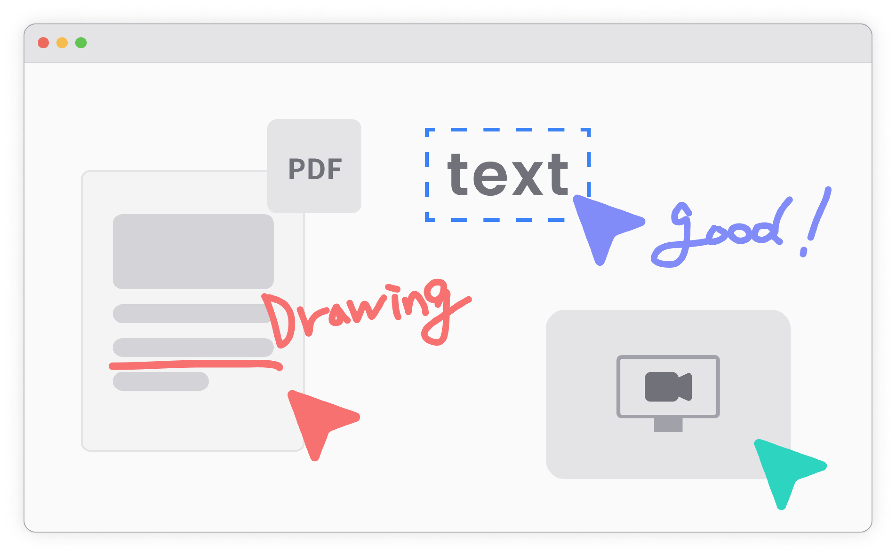

strum
Content-Driven 원격 미팅의 뉴노멀
비대면 음성미팅과 파일 공유로 프로덕트 팀과의 소통을 원활하게 하고 원격강의에 최적회 된 실시간 미팅 솔루션입니다.

비대면 음성미팅과 파일 공유로 프로덕트 팀과의 소통을 원활하게 하고 원격강의에 최적회 된 실시간 미팅 솔루션입니다.
클라이언트에게 웹 URL만 제공하면, 바로 음성회의를 시작 할 수 있습니다.
더 신경쓰이는 내 모습. 스트럼이 편안함을 제공해 드립니다.
드래그만 하면 이미지, PDF파일, 화면 공유까지 한번에!
스트럼 파일뷰어와 클라우드 파일 변환을 통해 다양한 형태의 문서를 실시간으로 업로드하고 공동 작업을 수행할 수 있습니다. 동시 텍스트 셀렉션, 다양한 주석 기능과 그리기도구를 활용하며 협업해보세요.
자체 제작된 고성능 무제한 보드에 파일, 이미지, url, 등 무엇이든 붙혀넣으며 동료와 이야기해보세요. 확대축소 및 스크롤시 60프레임의 속도로 Native App 수준의 퍼포먼스를 자랑합니다.
원격 미팅을 통해 자유롭게 대화해보세요. 실시간 녹화 기능으로 회의내용을 재방문하거나 추적하기 쉽고 음성인식 AI가 자동으로 자막을 생성하여 회의록을 따로 작성할 필요가 없습니다.
다운로드 없이 접속만으로 실시간 협업을 할 수 있습니다. 회의하면서 사용된 모든 문서는 서버에 저장되고 회의 히스토리를 관리할 수 있습니다.